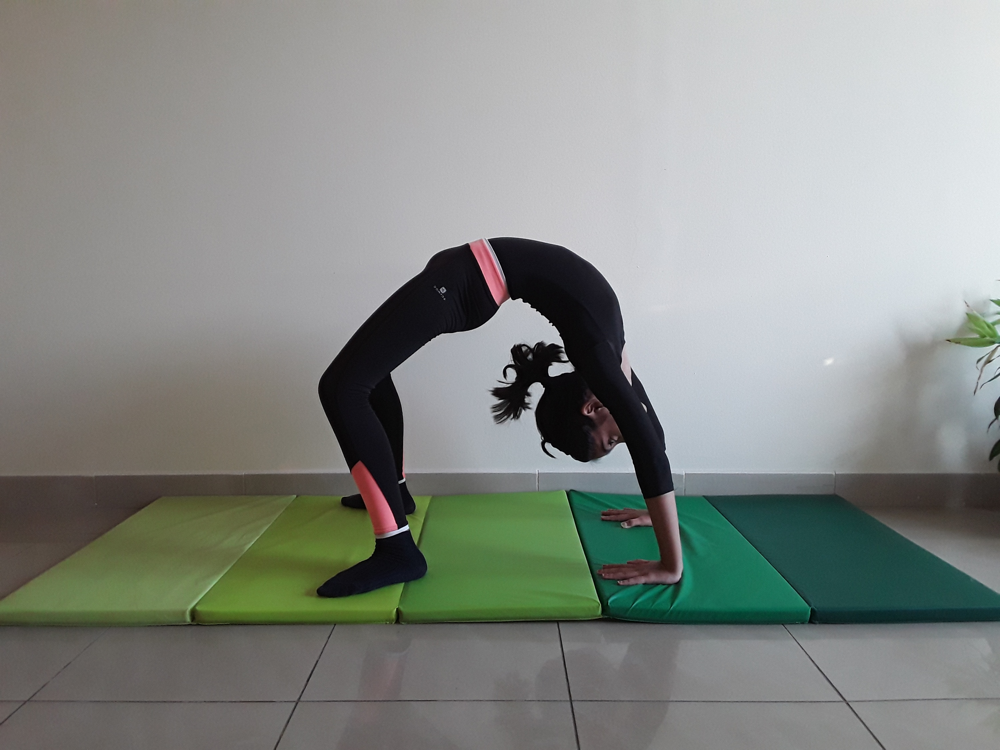

BRIDGE POSE

Steps to perform Bridge Pose
- Lie on your back with your knees bent and feet on the floor. Extend your arms along the floor, palms flat.
-
Press your feet and arms firmly into the floor. Exhale as you lift your hips toward the ceiling.
-
Draw your tailbone toward your pubic bone, holding your buttocks off the floor. Do not squeeze your glutes or flex your buttocks.
-
Roll your shoulders back and underneath your body. Clasp your hands and extend your arms along the floor beneath your pelvis. Straighten your arms as much as possible, pressing your forearms into the mat. Reach your knuckles toward your heels.
-
Keep your thighs and feet parallel — do not roll to the outer edges of your feet or let your knees drop together. Press your weight evenly across all four corners of both feet. Lengthen your tailbone toward the backs of your knees.
Hold for up to one minute.
- To release, unclasp your hands and place them palms-down alongside your body. Exhale as you slowly roll your spine along the floor, vertebra by vertebra. Allow your knees to drop together.